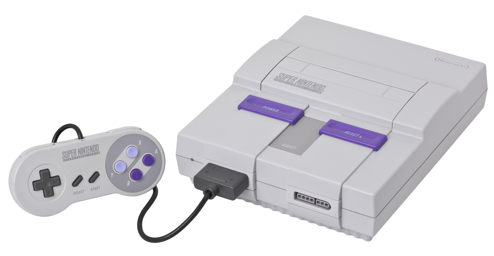

Music has been an everlasting form of media for centuries, and maybe millennia. With different cultures, instruments and styles, the medium of music allows one to express their feelings in their own heart. It's also no surprise that video games have also done a substantial amount of effect on the medium. With different scores and different arrangements from simple chiptune soundtracks of the arcade and NES to the upbeat synthesized blast processing of the Genesis to even beautiful and melodic pieces done by orchestras in more modern games, video game soundtracks have evolved over time.
What better way to start than to start at the forefather of it all, Chiptune. Chiptune can be traced back to around the early 1950s with some early computers. They were used to perform digital synth. It wasn't until the 1970s and 1980s that chiptune began to really take off in the gaming industry. With the coming of arcade machines companies were able to utilize computer chips and make music, albeit simple, for their games. With arcades, companies were able to freely use whatever technology they seemed fit to use; however as time moved on, companies moved from using arcade machines to home video game consoles. Due to how limited home video game consoles are it became a challenge for companies to be able to make what they see fit, however despite these setbacks they were able to make amazing masterpieces that still hold up to this day. Some of these masterpieces include the Super Mario Bros. theme, the overworld theme of Legend of Zelda, Wily Stage 1 of Mega Man 2, Vampire Killer from Castlevania etc.

With the coming of home video game consoles came different periods of hardware, or as some angry video game nerd once said “The Bit Wars.” With time comes better hardware supporting better graphics, better performance and of course, better music. The early days of Atari to the prime points of the NES were known as the 8-Bit era. Chiptune thrived here as the NES chip was very flexible and made some of the most iconic soundtracks in video game history. It was also in this era that the 16-bit consoles were introduced. This war started with SEGA and Nintendo, with Sega leading the charge on the higher bits. While Nintendo's NES was 8-bit, SEGA's Genesis was pure, raw, 16-bit blast processing goodness.
The 16-bit era of Nintendo saw the release of the Super Nintendo Entertainment System. With it a more powerful chip was made for the console that allowed more fluent soundtracks. It had this mix of a somewhat muffled 8-bit soundtrack, but could also support more channels and more instruments. While the NES was all synthesized chiptune, the SNES could support that and then some such as guitars, strings, trumpets, and even pianos. Some of these include the Storm Eagle stage of Mega Man X, The Waterfall of Super Castlevania IV, the Athletic theme from Super Mario World, and most notably Hyrule Castle from Legend of Zelda: A Link To The Past.
As time moved on and home consoles improved with better hardware, companies were able to make better music as the hardware supported more channels. However, this also didn't stop other companies from going back and making more 8/16-bit soundtracks. One notable example is Sabotage's hit game, The Messenger. In the game it utilizes both 8-bit and 16-bit soundfonts to create a very diverse soundtrack. Not only has video game music improved, but it also has introduced subgenres of Chiptune such as Chipstep etc. With hardware improving, and companies straight out hiring even professional orchestras to perform their songs, video game music has shown to evolve from something as simple as synthesized music from computer chips, to grand orchestras.